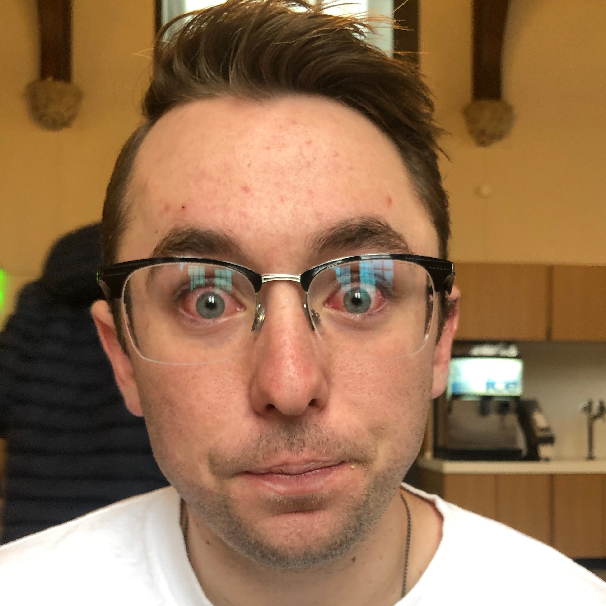
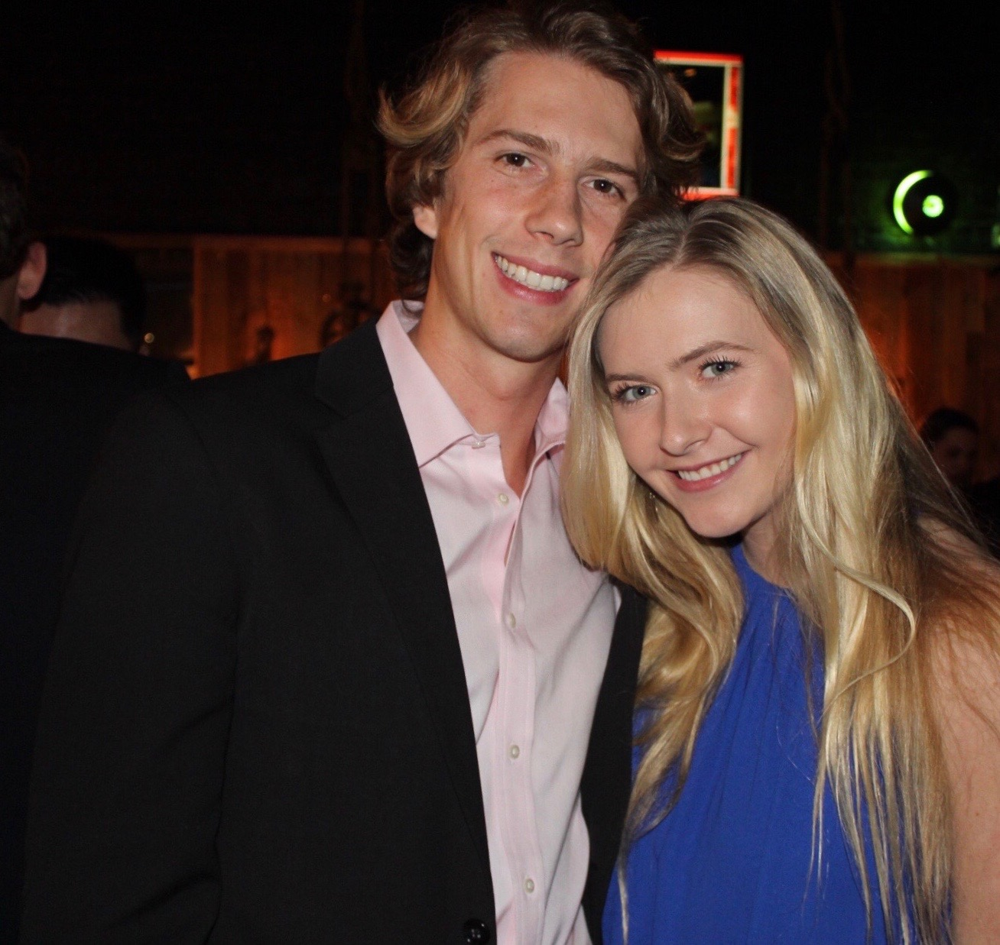

BXR (Brand EXperience Rating) is
a platform that focuses on brand-to-customer relationships. By utilizing a unique model that focuses exclusively on the
product and customer, BXR delivers to both parties involved: brands get quality data at a cheap price, and
consumers are rewarded for testing the products they love. What could be better?
At BXR, we strive to create an inclusive, accomodating experience for all of our users and customers.
If we ever fall short of your expectations, please let us know! We value your opinion and feedback.
Sean attended Konkuk University in South Korea, where he studied Apparel Design. He now works at Pan-Pacific as a Strategy Planning
Manager, and is currently working towards an MBA at Duke University's Fuqua School of Business. In his free time, he enjoys brainstorming
ideas for startups and pampering his eleven cats.

Nishant attended University at the National Insitute of Technology Kurukshetra in India. Previously working for the Business Operations Team at Amazon,
Nishant now studies at Duke University's Fuqua School of Business. When not hard at work, Nishant enjoys hiking and camping in adventurous places.
Daniel is originally from Cleveland, Ohio and now studies Computer Science and Finance at Duke University.
He enjoys golf, fitness and reading. He's also a huge Billy Joel fan!

Will is originally from Hawaii and currently lives in Austin, Texas. Will studies Computer Science and Decision
Sciences at Duke University. He enjoys spending time outdoors and reading fantasy novels. He has two younger siblings, a one-year-old son, and a dog named Koda.